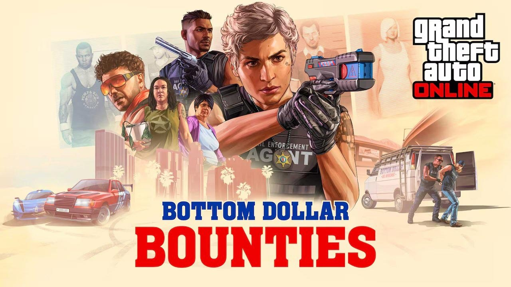

Liste des mises à jour et DLC de GTA Online
GTA Online est un jeu multijoueur qui est régulièrement mis à jour gratuitement, découvrez ci-dessous l'ensemble des DLC de Rockstar Games disponibles jusqu'à présent dans GTA Online. Certaines de ces mises à jour ne sortent plus sur d'anciennes générations de consoles telles que la Xbox 360 et la PS3 pour des raisons de faibles performances hardware.
